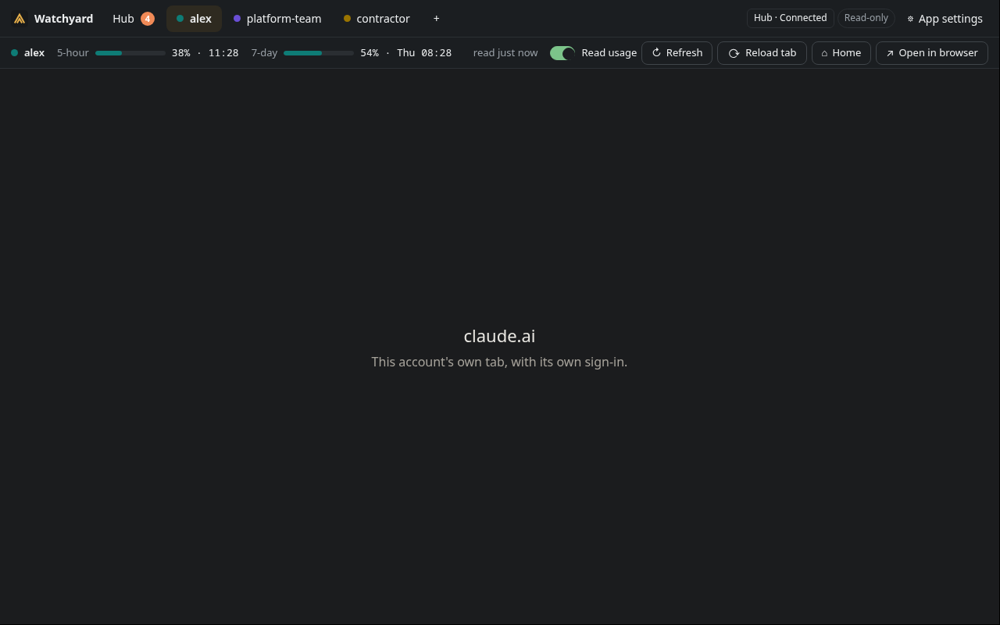
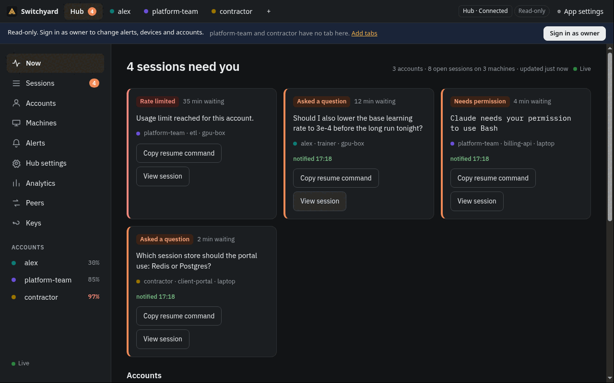

Desktop app
One tab per claude.ai account, each with its own sign-in, a usage strip per account, and the board in a Hub view. Linux (AppImage, deb, rpm), macOS (dmg) and Windows (installer).
Unsigned builds. Packages are not code-signed, so macOS and Windows warn on first start. Download one from the latest release and check it against SHA256SUMS-desktop, or build it with make app-dist.

